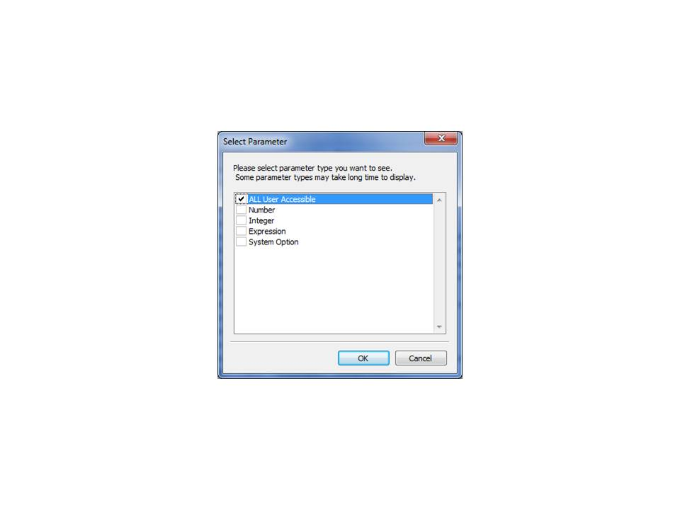
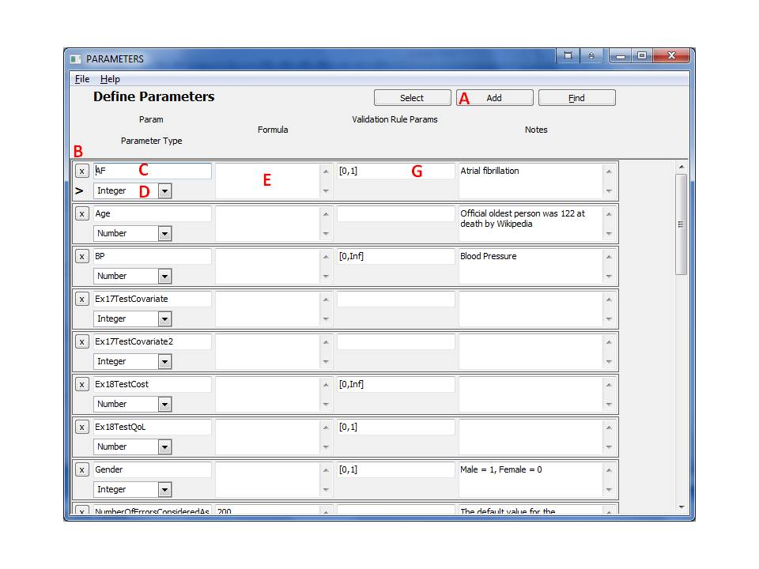

11 Parameters
Parameters are used for various purposes by the system: Parameters that will change during simulation or define a demographic characteristic of a subject, they also can be defined by a user-specified expression/function and then used in subsequent functions as a symbol/shorthand for the user specified function; i.e., they may replace complex mathematical expressions or random generators in multiple functions.
11.1 Parameter Types
The following parameter types can be defined by the system.
- Number - accepts any floating point number such as 1.23345 or -0.123 or 1.2e3, subject to specified limits.
- Integer - accepts integers, such as 1,2,3, the system will raise an error if a non integer is assigned to the parameter during simulation, subject to specified limits.
- Expression - gives a name for an expression/function that can be used later during calculations. Each time the function name is used, it will be replaced by the expression that it represents. For example, a function that increases age may be called AgeIncrease and hold the function Age+1. When a function parameter is encountered in an expression, it is replaced by its contents during evaluation. Note that if this function includes a random number generator, a different value of the generator will be used each time the expression/function is invoked. Consider for example a parameter called CappedGaussian that generates random numbers using a Gaussian distribution with mean=0 and STD =1 that is restricted to the range from -3 to +3. This can be done by the user using the formula Min(Max(Gaussian(0,1),-3),3) to define this function type parameter. After definition in the parameter form, CappedGaussian can be used in any expression in the system during simulation or population generation from distributions. Whenever this parameter is encountered during simulation, a new random number will be generated on the fly; that is, reusing CappedGaussian will generate a new random number rather than return the same value. This is different than most other parameter types that generally hold values that are assigned to them. Note that bounds can still be defined to an expression parameter.
- System Options - These names are set by the system by default; their values can be modified by the user to change functionality of the system. Here is a short description of these parameters by categories of influence:
- ValidateDataInRuntime: A number that defines the level of validity checking of expressions during simulation and population generation from distributions. The following levels are supported:
- 0: No validity checking.
- 1 or greater: Check that probabilities are within 0 and 1 and check that these sum to 1 when leaving event states and joiner states, and check that a value assigned to a parameter fits the validation rules defined for it.
- 2 or greater: Check that function parameter validity rules are honored during calculation of expressions - this is the default option.
- 3 or greater: Impose extra redundant validation checks on all phases of calculation.
- NumberOfErrorsConsideredAsWarningsForSimulation: The number of times the system will accept parameter validity violation errors during simulation as warnings and will not stop simulation. When this number of errors is reached, the system will raise a fatal error to the user and stop simulation. The error messages can be seen on the console window.
- NumberOfTriesToRecalculateSimulationStep: The number of times that the system will force recalculation of the same time step if an error was raised during this time step. If unsuccessful after this number of recalculations then force recalculation of the entire individual from the first time step.
- NumberOfTriesToRecalculateSimulationOfIndividualFromStart: The number of times an individual will be recalculated from start in case errors appeared during simulation that forced restarting calculations. If this number of tries is reached, a fatal error is raised that stops simulation.
- SystemPrecisionForProbabilityBoundCheck: This is a very small tolerance number that defines how accurate will be fatal error checks for probabilities if ValidateDataInRuntime>=1. This number allows overlooking machine precision issues.
- RepairPopulation: This integer defines the level the system will try to correct a population set to fit a model before simulation. The following levels are supported:
- 0: No repairs are made and errors are generated. This forces the user to match population set parameters and model parameters very carefully, including process names.
- 1 or Greater: The system will attempt to figure out values for process state indicators and other states in the process according to the model structure and according to state indicator values defined in the population set.
- 10 or Greater: The system will remove individuals with empty values in the population data before simulation, and therefore avoid generating an error that will stop the simulation process.
- VerboseLevel: Defines how much information to output during simulation.
- Here are supported levels for output from population generation from distributions:
- 3 or greater: Record random seed number on file that will be created at the start of population generation from distributions.
- 7 or greater: Record generated population set on file. This would be a pickled python list object.
- 10 or greater: Print an announcement each time a new individual starts generation. Also print a generation summary at the end of of population generation from distributions.
- Here are supported levels for output from bridging population set and model definitions before simulation:
- 1 or greater: Print summary of the bridge process.
- 5 or greater: Print a message if deleting a record due to a missing value.
- 10 or greater: Show each process set by the system due to a child state.
- Here are supported levels for output from simulation:
- 3 or greater: Record random seed number on file that will be created at the start of simulation.
- 7 or greater: Record simulation results set on file.
- 10 or greater: Print an announcement each time a new individual starts simulation. Also print a simulation summary at the end of simulation.
- 20 or greater: Print an announcement each time an individual starts a new repetition during simulation. Also print a message if recalculation of a repetition was forced due to error.
- 30 or greater: Print an announcement each time step during simulation. Also print a message if recalculation of a time step was forced due to error.
- 40 or greater: Print an announcement for each state in the State Processing Queue (SPQ). This is highly advanced and requires deep understanding of the system.
- RandomSeed: Defines a random seed to start both population generation and simulation. NaN is used to indicate that system time will be used as a random seed - essentially making numbers different each simulation.
- NumberOfErrorsConsideredAsWarningsForPopulationGeneration: The number of times the system will accept boundary violation errors as warnings and will not stop during population generation from distributions. When this number or errors is reached, the system will raise a fatal error to the user. Error messages can be found on the console window.
- NumberOfTriesToRecalculateIndividualDuringPopulationGeneration: The number of time the system will try to recalculate the same individual if a non fatal error is encountered during calculation of that individual. Once this number is reached a fatal error will be raised and generation of data from distributions will stop.
- State Indicator - These cannot be changed by the user, but can be used in expressions and other system functions. For each state created in the system, there will be two State Indicator parameters associated with it - the actual state and the entered state indicator - see States. The validation rule for this type of parameter is Integer [0,1].
When defining a parameter the user can define additional validation rule parameters of the type [min, max] that will define bounds for this parameter. For example a user who wishes to define a Boolean parameter, should define an integer with the validation rule parameters of [0,1]. Another example is a user who wishes to define a positive integer should define a parameter of the type integer with the validation rule parameter of [0,Inf]. By default and unless specifically requested otherwise by the user by changing the appropriate system options, validation rule parameters are checked during simulation at each step to verify values are within the allowed ranges.
11.2 Working with Parameters
Creating Parameters
- From the main form, click the 'Parameters' button on the left-hand navigation panel. The following form will appear:

- To see all parameters, make sure 'ALL User Accessible' is selected, and press 'OK'. You can also decide to check only the parameter types of interest to view instead seeing all parameters. Then the parameter form will appear:

- This form displays the Parameter details. To add a new Parameter, click the 'Add' button (A), and a blank row will appear.
- Enter the Parameter name in the box (C).
- Pick the Parameter Type from the drop-down (D).
- For an Expression or System Option enter a Formula in the box (E). An expression defined in the formula defines a substitution expression that will be calculated on the fly, whenever encountered, and may receive different values if it includes a random number generator.
- Optionally Enter the Validation Rule Parameters in the box (G). A Validation Rule will define the range of values the parameter may have within brackets using the format [MinAllowed,MaxAllowed]
- Close the form or move to the next record to save the entry. This will trigger validity checking of the data entered and if no error message is displayed, then the data has been saved to memory. Note that the information is not yet saved to a file.
Note that the parameters form can accessed from other forms by double clicking a field that requires a parameter. This allows creating parameters on the fly while working from another form.